1. Abrasão e atrito
Solução preventiva:
Mangueiras com maior resistência à abrasão, proteção adequada e correção do posicionamento.
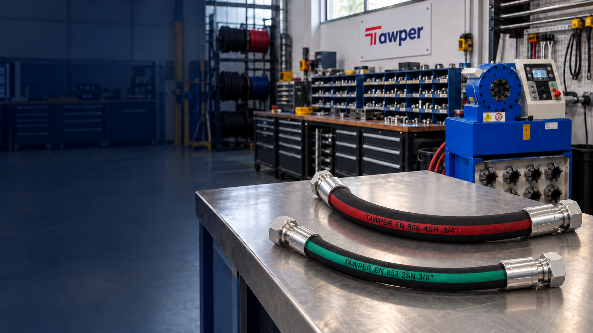
Tecnologia, rastreabilidade e confiabilidade.
Nossa história
A Tawper nasceu dentro da Alfa Agro Peças, na operação com mangueiras e conexões hidráulicas.
A dificuldade de encontrar no Brasil um produto confiável e durável levou à consultoria internacional e ao desenvolvimento de uma linha própria.
01
Conhecimento das aplicações e das falhas em campo.
02
Busca de tecnologia e ajustes nos componentes.
03
Mangueiras e conexões para atender à operação.
Resultados informados pela Tawper
Informações fornecidas pela Tawper.
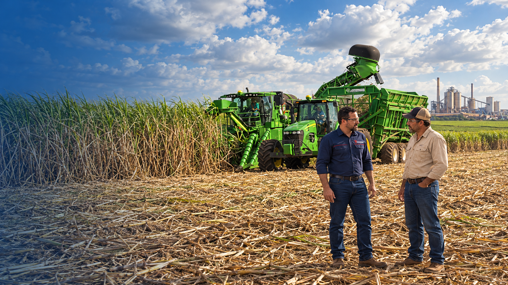
Tecnologia, fabricação e atuação
01 · TECNOLOGIA
Origem técnica inglesa
no desenvolvimento da linha.

02 · PRODUÇÃO
Fabricação dos produtos
da linha Tawper.

03 · APLICAÇÃO E SUPORTE
Marca brasileira, fornecimento
e acompanhamento da operação.
Essa combinação deu origem à solução Tawper para a operação brasileira.
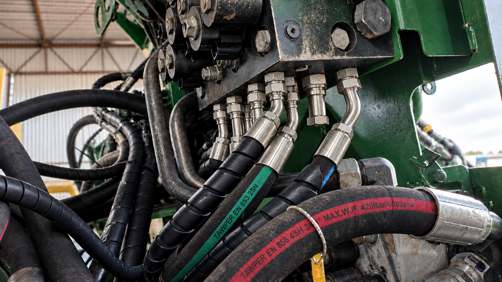
O ponto de partida
Uma única mangueira pode interromper funções essenciais da colhedora.
O impacto depende do ponto da falha, das condições de trabalho e do tempo de recuperação.
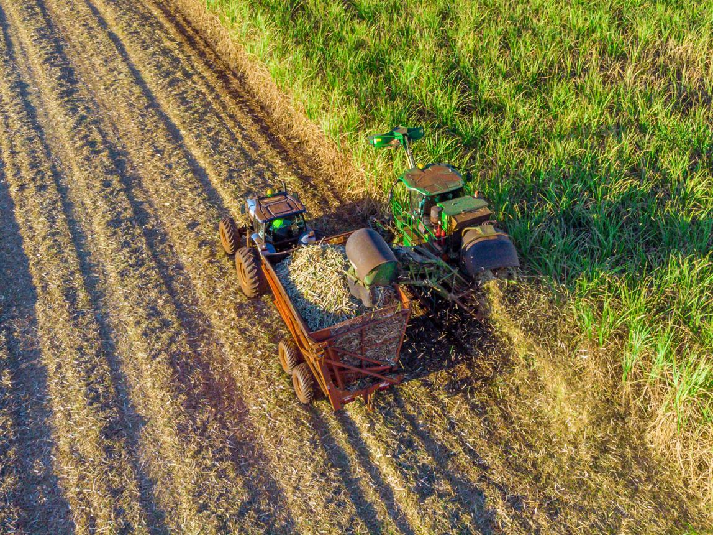
O efeito dominó
A frente de colheita sente uma falha que começou em um único componente.
Os custos que não aparecem na peça
custos potenciais
de um rompimento
Cada ocorrência pode desencadear uma combinação desses efeitos.
Os custos que não aparecem na peça
custos potenciais
de um rompimento
Cada ocorrência pode desencadear uma combinação desses efeitos.
Custo estimado da ocorrência
neste exemplo.
é a participação da mangueira
neste exemplo.
Valores ilustrativos fornecidos pela Tawper. Hipóteses: 200 L de óleo × R$ 20/L; R$ 3.000 atribuídos à indisponibilidade.
O volume perdido e o custo da parada variam. Demais efeitos operacionais e ambientais não estão incluídos.
Solução preventiva:
Mangueiras com maior resistência à abrasão, proteção adequada e correção do posicionamento.
Solução preventiva:
Monitoramento de pressão e verificação das válvulas de alívio.
Solução preventiva:
Seleção de mangueiras com resistência a impulsos compatível com a aplicação.
Solução preventiva:
Proteção térmica, afastamento das fontes de calor e controle da temperatura do óleo.
Solução preventiva:
Fixação apropriada e análise dos movimentos da máquina.
Solução preventiva:
Correção do roteamento, respeito ao raio mínimo de curvatura e utilização de curvas e suportes adequados.
Solução preventiva:
Controle dimensional, componentes compatíveis e procedimentos padronizados.
Solução preventiva:
Inspeções periódicas e substituição planejada por condição e criticidade.
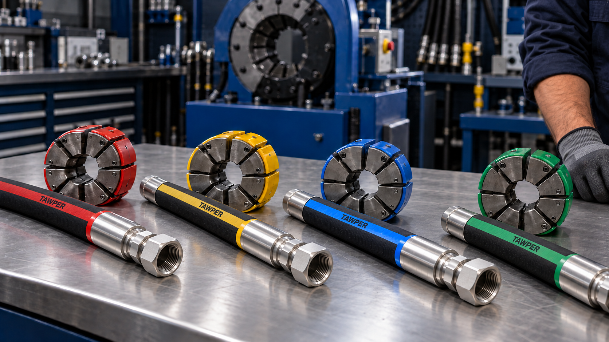
Da bancada ao campo
Mangueiras de alta pressão
Origem técnica inglesa, com uma linha desenvolvida para aplicações severas.
Para operações agrícolas, industriais, florestais e de mineração.
Certificações informadas pela Tawper
Conforme a linha aplicável.
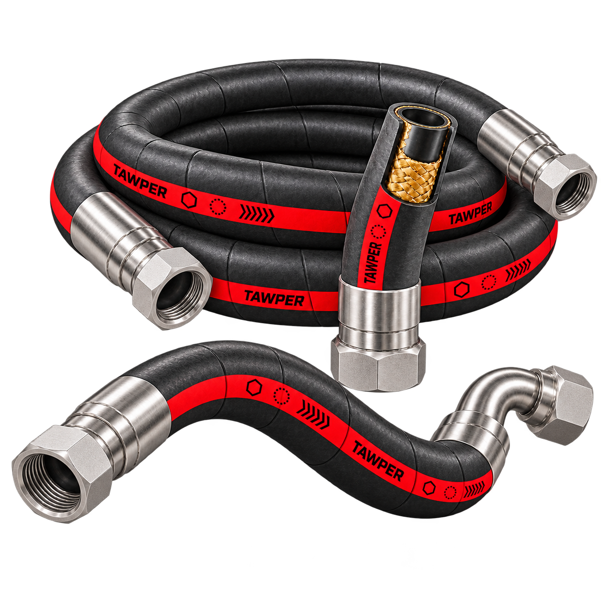
Componentes do conjunto
Terminais prensados à mangueira para compor o conjunto hidráulico.
Mangueira, terminal e capa definidos conforme a aplicação.
Uma linha para atender diferentes configurações do sistema hidráulico.
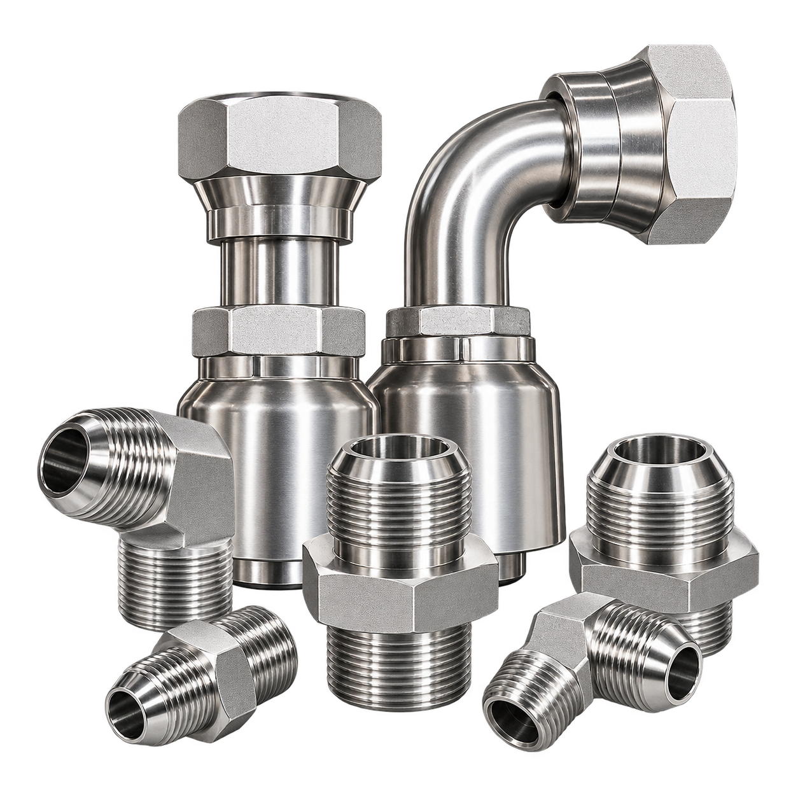
Preparação da mangueira
Corte da mangueira no comprimento definido para cada conjunto.
Preparação da mangueira antes da montagem dos terminais.
Depois do corte, o processo segue com montagem, descontaminação e proteção da abertura.
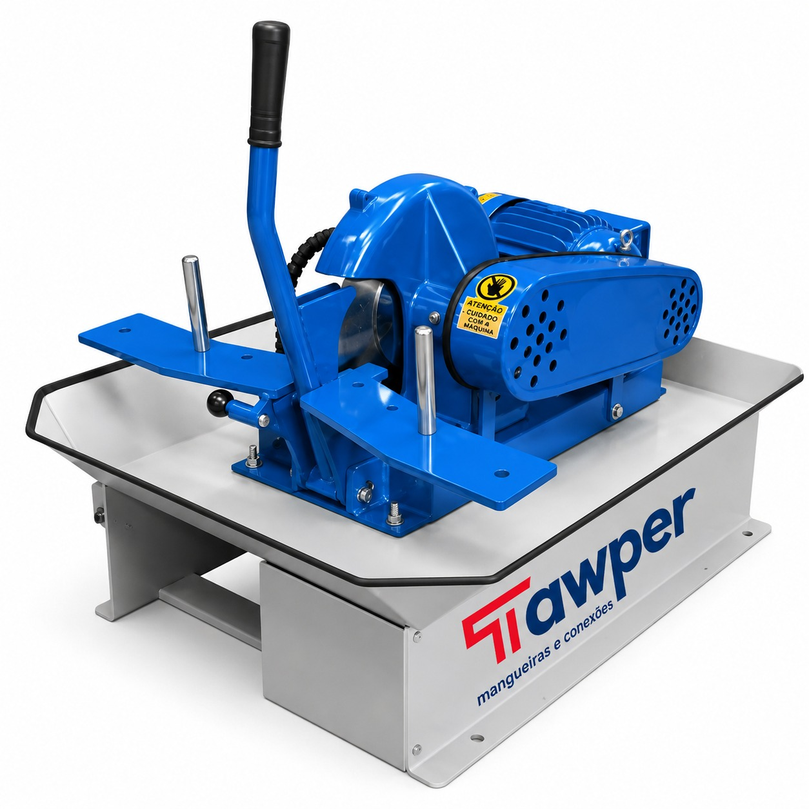
Sistema de cores Tawper
A identificação da mangueira corresponde à cor da castanha da prensa.
Uma referência visual
para reduzir erros
na escolha do conjunto.
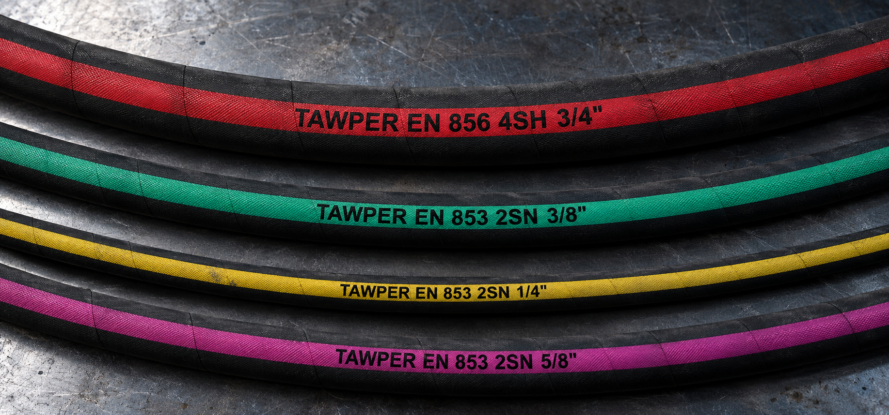
A cor auxilia a seleção. A especificação técnica e o treinamento continuam essenciais.
Prensa com final de curso
Dispensa ajustes por micrômetro durante a prensagem.
Mais praticidade e agilidade, com menor possibilidade de retrabalho.
Operação conforme o procedimento de montagem e o treinamento específico da Tawper.
Uma referência visual para reduzir erros
na escolha do conjunto.
A castanha da prensa tem a mesma cor da mangueira.
Preparação do conjunto
A pistola de descontaminação remove resíduos internos da mangueira antes da instalação.
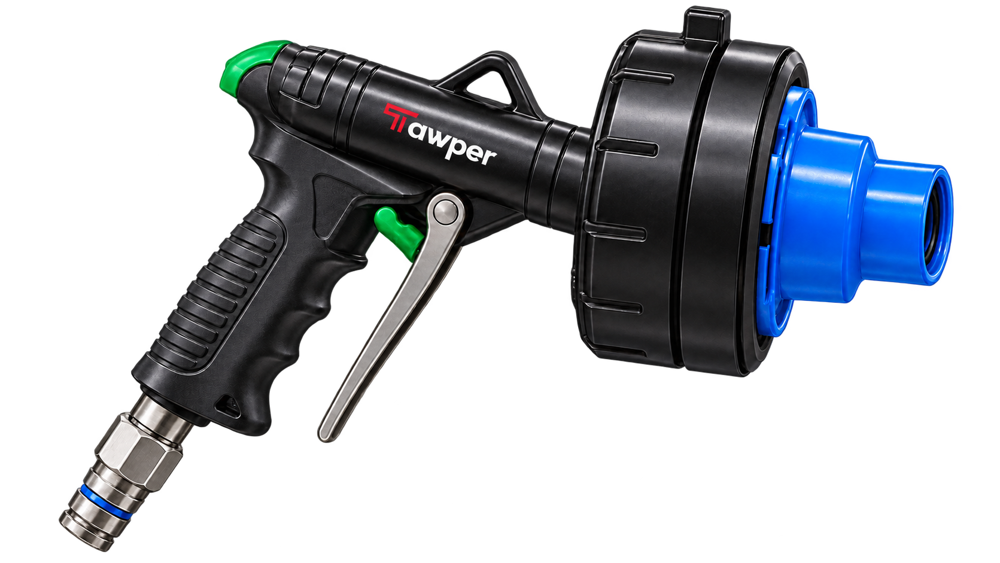
Preservar a limpeza do conjunto
é proteger o sistema hidráulico.
Pistola de descontaminação · material institucional Tawper
Proteção da extremidade
O lacre se ajusta ao terminal e protege a abertura da mangueira até a instalação.
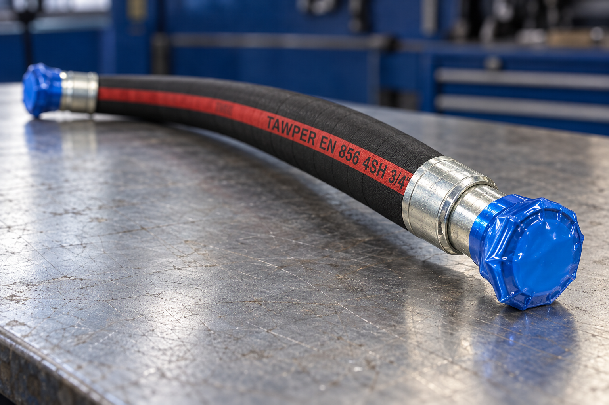
Lacre retrátil: proteção da abertura.
Lacre numerado HydraSense: identificação do conjunto.
Identificação do conjunto
Identificação no terminal com os dados definidos para a sua operação.
Código individual do conjunto.
A gravação complementa o lacre numerado e o registro no HydraSense.
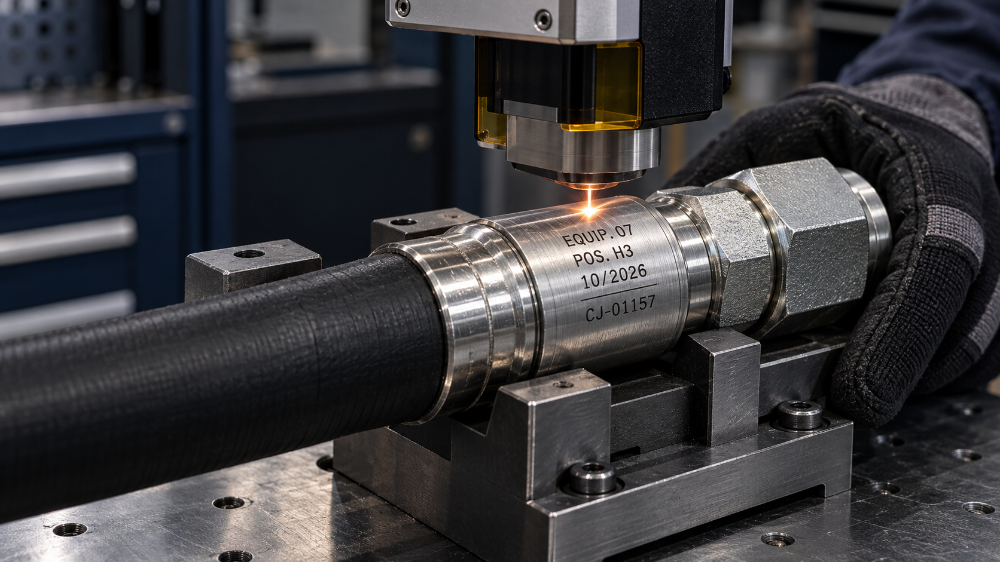
Capacitação e suporte
Treinamento teórico e prático em produtos, montagem, inspeção e conservação.
Orientação nas unidades operacionais
e diretamente no campo.
Criamos catálogos personalizados para a sua operação.
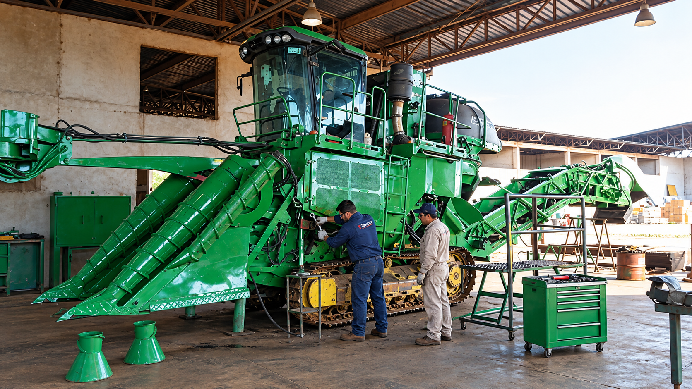
Suporte técnico na manutenção
Tawper Academy
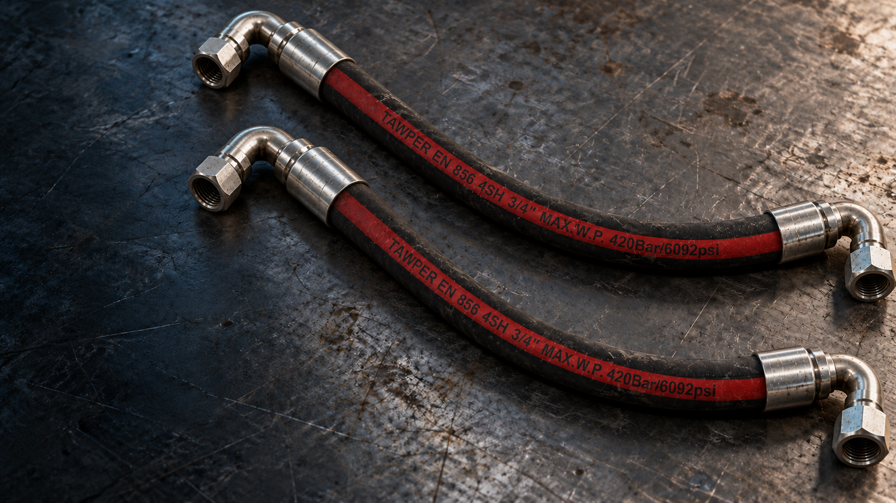
Mesma marca. Mesma especificação.O limite da informação visível
Qual foi instalada primeiro?
Qual apresentou mais falhas?
Em qual equipamento trabalhou?
Por que foi substituída?
Sem registros, comparar desempenho
e encontrar recorrências fica mais difícil.
Uma identidade individual.
Um histórico que acompanha
o conjunto.
HydraSense · quatro etapas
Lacre numerado e gravação a laser no conjunto.
Componentes e informações técnicas vinculados à mangueira.
Equipamento, aplicação e dados de instalação no registro.
A equipe informa o número do lacre e acessa as informações.
Uma rotina de registro que preserva conhecimento.
Do primeiro cadastro à substituição.HydraSense · identidade individual
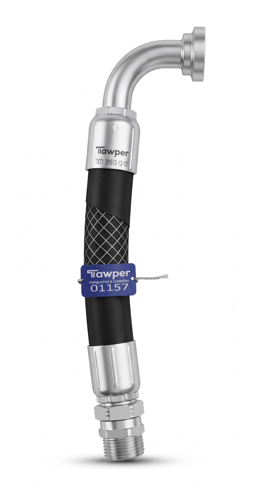
O número do lacre conecta
a mangueira ao seu registro.
Responsável pela montagem
Terminais e conexões utilizados
Comprimento do conjunto
Equipamento e aplicação
Técnico responsável pela instalação
Horímetro informado
Histórico de uso, acompanhamento e substituição
Informações vinculadas ao registro conforme o cadastro e a atualização realizados pela equipe.
HydraSense · gestão da informação
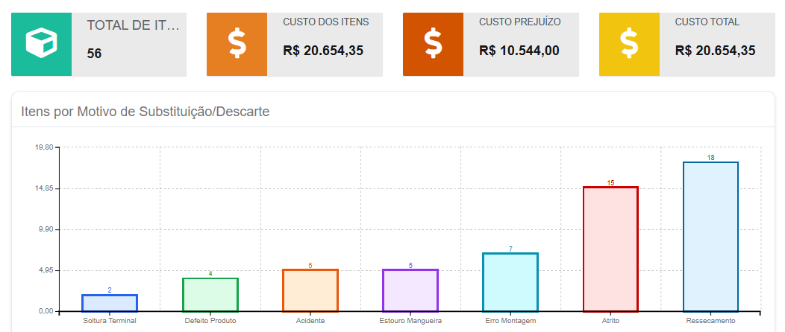
Comparar motivos de substituição e padrões de ocorrência.
Relacionar o histórico técnico às informações de custo registradas.
Usar o histórico e o horímetro para apoiar inspeções e trocas.
Tela de referência do HydraSense · análise dos registros de custo e substituição.
Importação e fornecimento direto
A Tawper atua como importadora e fornecedora direta para grandes consumidores.
Menos intermediação.
Mais competitividade.
Uma estrutura comercial que reduz etapas
entre o fornecimento e o grande consumidor.
O método Tawper
Produto, processo, equipe e informação trabalhando juntos.
Importação e estrutura comercial enxuta.
Frota, aplicações e pontos críticos.
Equipamentos, cores e montagem padronizada.
Identificação e histórico com o HydraSense.
Acompanhamento na unidade e no campo.
Análise de falhas, desperdícios e indicadores.
Resultados que orientam o próximo ajuste.
O compromisso
continua depois
da entrega.
Confiabilidade que se mede
Acompanhar componentes, retrabalho, óleo e indisponibilidade.
Reduzir o tempo perdido com falhas e recuperação.
Preservar o ritmo da operação em campo.
Planejar com processo, registro e histórico.
Mais controle sobre o que mantém
a máquina em movimento.
Objetivos de trabalho. Os ganhos são avaliados com os dados de cada operação.
Onde a Tawper atua
Sede da Tawper.
Ponto de apoio no Nordeste.
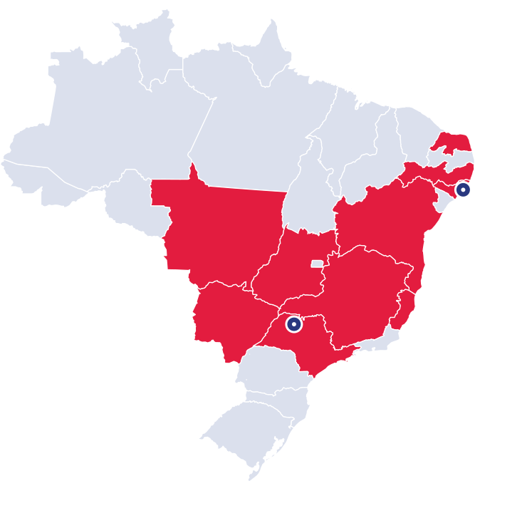
Atuação informada pela empresa
SP · MG · ES · MS · MT · GORelacionamentos construídos em campo
Seleção de clientes e volume de empresas atendidas informados pela Tawper.
Vamos conhecer a sua operação?
Entender a frota, as aplicações e os pontos críticos.
Definir o conjunto certo para cada necessidade.
Manter os processos e o histórico no campo.
Contatos